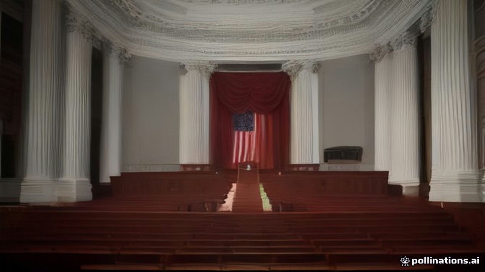

ডেমোক্র্যাটরা হাকিম জেফ্রিসকে প্রথম কৃষ্ণাঙ্গ হাউস স্পিকার হিসেবে মনোনয়ন করেছে
DW, France 24, Al Jazeera English · 2026-11-18
AI-generated illustrationডেমোক্র্যাটরা নিউ ইয়র্কের কংগ্রেসম্যান হাকিম জেফ্রিসকে প্রথম কৃষ্ণাঙ্গ স্পিকার হিসেবে মনোনীত করেছে।
ফ্রান্স ২৪ অনুযায়ী, বুধবার মার্কিন হাউসের ডেমোক্র্যাটরা হাকিম জেফ্রিসকে স্পিকারের প্রার্থী হিসেবে আনুষ্ঠানিকভাবে মনোনয়ন করেছে। তিনি নিউ ইয়র্কের কংগ্রেসম্যান এবং এই পদে প্রথম কৃষ্ণাঙ্গ আমেরিকান হওয়ার পথে।
DW জানিয়েছে, ডেমোক্র্যাটরা যখন আগামী বছর কক্ষের নিয়ন্ত্রণ নেবে, তখন জেফ্রিস প্রথম কৃষ্ণাঙ্গ স্পিকার হবেন। আল জাজিরা উল্লেখ করেছে যে, এই মনোনয়নটি এই মাসের মিডটার্ম নির্বাচনে পার্টি কংগ্রেস নিয়ন্ত্রণ অর্জনের পর এসেছে।
Read the original reporting at the links above.
English version
US Democrats Nominate Hakeem Jeffries as First Black House Speaker
According to France 24, Democrats in the U.S. House of Representatives formally nominated Hakeem Jeffries as their candidate for speaker on Wednesday. Jeffries, a New York congressman, is now on track to become the first Black American to hold the gavel.
DW reported that Jeffries would be the first Black speaker when Democrats assume control of the chamber next year. Al Jazeera noted that the nomination follows the party’s gain of congressional control in this month’s midterm elections.